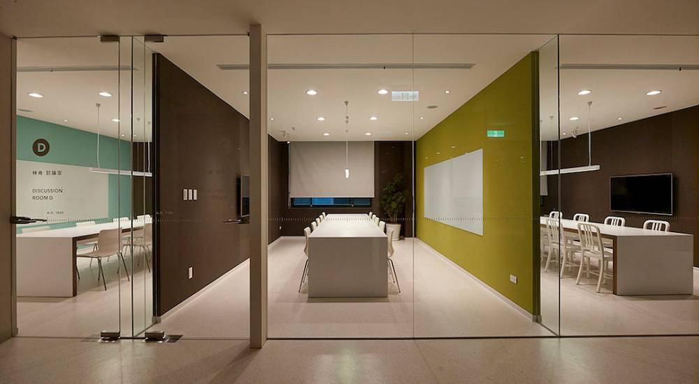
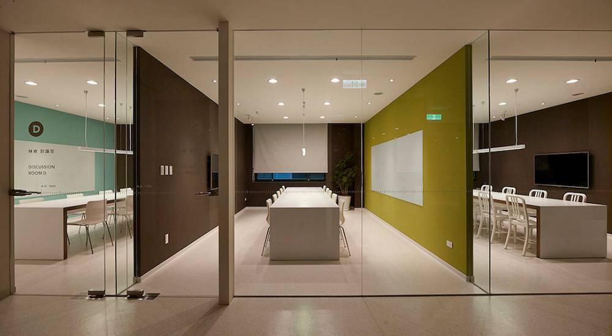

這裡提供6間獨立的預約討論空間，學生可以在這邊進行小組討論或實作。各討論室配備液晶螢幕
、白板，另有筆記型電腦可借用。討論室內禁止飲 食然後可以提前在線上預約，以免臨時要約卻
都被約滿了。除此之外活水來討論室外面還有2張自由入座的桌子，適合沒有帶學生證的人來自習
、使用自己的筆記型電腦等，因為牆上都有插座喔!人數2-3人的來討論課業做報告，也是很適合
的， 這邊也都是禁止飲食的喔!所以如果有帶飲料就要放在討論室外面的白色平台上。

週一至週五： 09：00 ~ 20：00
週六： 09：00 ~ 17：00
 
